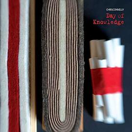

《跑外卖：一个女骑手的世界》

总体观点
《跑外卖：一个女骑手的世界》打破了传统学者居高临下的抽象数据调研范式。作者杨丽芬作为一名中年女性知识分子，亲自买电动车、穿上工服在城市街头奔波接单一整年，以最敏锐的肉身痛感记录了平台资本主义在数字时代的真实运转逻辑。
作品揭示了外卖算法系统如何通过红绿灯倒计时、路线压缩、超时扣款与好评考核，将活生生的人异化为高速移动的生产数据元件。更可贵的是，全书重点聚焦外卖行业中隐形的女性群体，展现她们在面对生理期、重体力搬运、照顾家庭与街头安全的多重压力下，所迸发出的惊人韧性与姐妹互助微光。
核心观点
-
1. 算法黑箱下的肉身极速折旧与时间围困
外卖平台算法不断通过最优骑手数据压缩配送时间，迫使所有骑手为了避免超时扣款在车流中逆行、闯红灯，生命安全被转嫁为个人风险。
系统给出预计配送时间二十五分钟，扣除餐厅出餐延迟十分钟，骑手必须在十五分钟内跨越三个复杂红绿灯路口并爬上无电梯老旧小区七楼。 -
2. 女性骑手的双重肉身困境与隐秘抗争
外卖行业默认以年轻男性体力为基准制定标准件重量与时效，女性骑手在面对生理期腹痛、搬运两桶重纯净水时承受着更严酷的身体折磨。
作者记录自己冬天在零下寒风中送外卖遭遇痛经，在商场洗手间靠喝一杯自备热水缓解，随后咬牙扛起二十斤超市订单冲向写字楼。 -
3. 城市折叠：外卖箱连接的悬殊生活褶皱
外卖箱如同一个穿透城市阶层壁垒的探针，骑手往返于奢华高档小区与阴暗逼仄城中村之间，亲眼目睹现代都市最强烈的繁华与贫困反差。
前一秒给豪宅顶层送去上千元的进口生鲜水果，后一秒回到自己在城中村没有窗户的八平米合租屋吃一碗泡面。 -
4. 街头江湖中的底层互助与人道微光
尽管平台算法鼓励骑手之间抢单竞争，但在真实的马路牙子和充电商铺旁，骑手们自发形成了互相借电瓶、指路与分享防寒经验的朴素同盟。
一位新手女骑手在暴雨中电动车倒地汤水洒出急得大哭，旁边两位陌生老骑手主动停车帮其扶车并联系熟识餐厅重新快速补做一份餐。 -
5. 重构劳动尊严：从技术奴役走向制度保障
零工经济不应成为规避社保责任的避风港，社会必须看见外卖骑手作为现代城市基础设施运行不可或缺的劳动者价值，给予平视与制度托底。
呼吁将新就业形态劳动者纳入职业伤害保障，取消严苛的“超时一秒扣半价”恶意惩罚机制，还给劳动者起码的人性尊严。
全书思维导图 · 知识脉络树
全书结构
-
第一部分：穿上黄色工服（初入外卖江湖）
交代成为骑手的动机、购置二手电动车与外卖箱、通过平台线上考核；第一次接单的慌乱、迷路与在商场复杂动线中奔跑的肉身实录。
第一天送单因为找不到地下车库入口导致超时被客户破口大骂，在深夜冷风中看着手机扣款两元信息时的辛酸委屈。 -
第二部分：算法囚徒与街头博弈
拆解平台派单逻辑、近单带远单的套路；骑手为了争分夺秒与保安周旋、与红绿灯赛跑、在无电梯老小区飞奔爬楼的生存策略。
总结出“哪家小区允许骑车进入、哪家写字楼必须扣押身份证”的私人街头生存地图，展现打工人应对制度规训的草根智慧。 -
第三部分：女性骑手的双重世界
记录多位不同年龄女骑手的真实故事：单亲妈妈带着孩子跑单、为了给重病家人凑医药费拼命接单、女性在男性主导的骑手群体中的自我保护。
一位四十岁大姐把婴儿车改造成外卖车，一边送单一边把孩子固定在后座，展现母爱在残酷现实中的咬牙坚守。 -
第四部分：平台系统下的同行温情与微光
骑手早会、换电站前的唠嗑、微信互助群里的求助与调侃；在风霜雨雪中建立起跨越血缘的兄弟姐妹阶级同理心。
大年三十夜晚依然在街头等单的留守骑手们，聚在路边便利店门口分吃一盒热饺子互道新年快乐的暖心片刻。 -
第五部分：数字零工经济与尊严反思
从学者视角进行社会学升华：反思平台算法资本主义的剥削隐蔽性，探讨零工劳动者的社保缺位、工伤困境与未来制度改革出路。
对比传统制造业工厂流水线与现代数字外卖平台，指出算法监控让劳动者虽然享有表面上的时间自由，却陷入更深层的全天候神经紧绷。